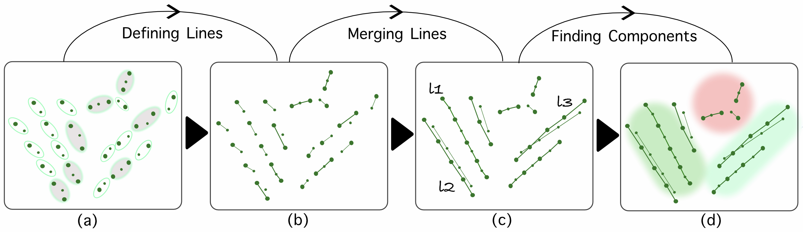
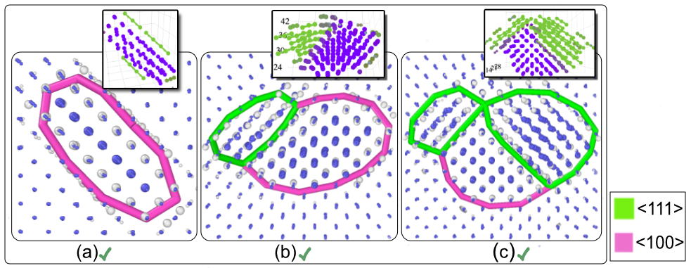
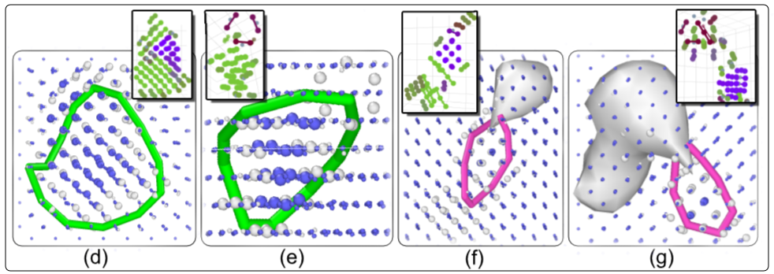
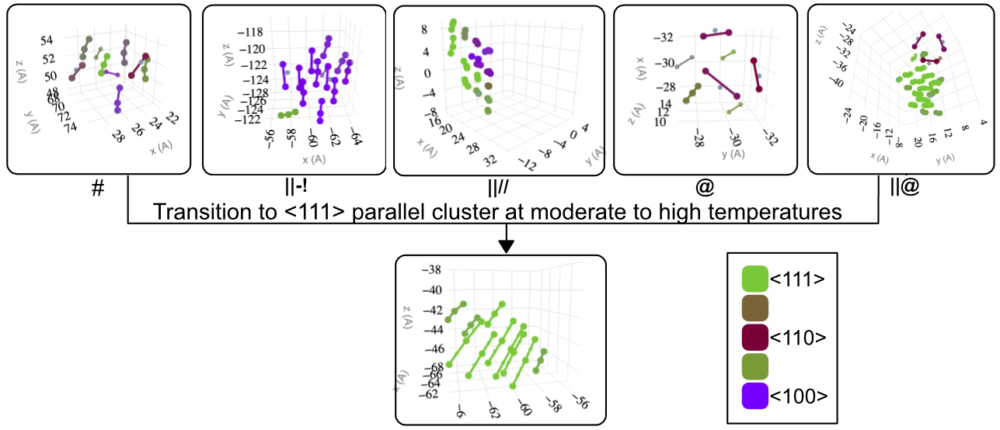
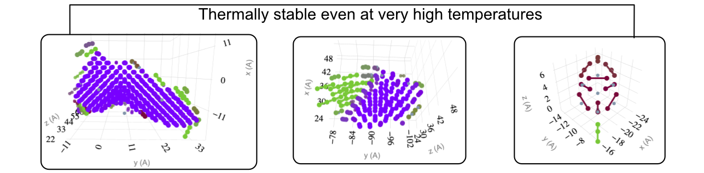
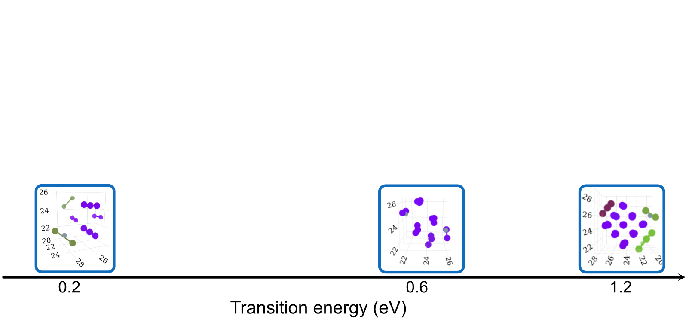
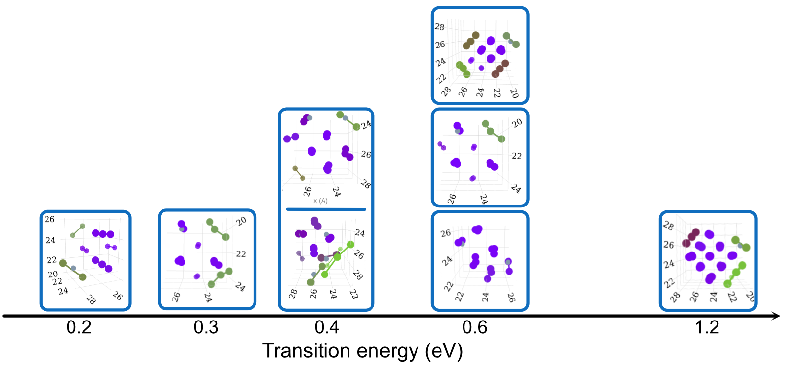
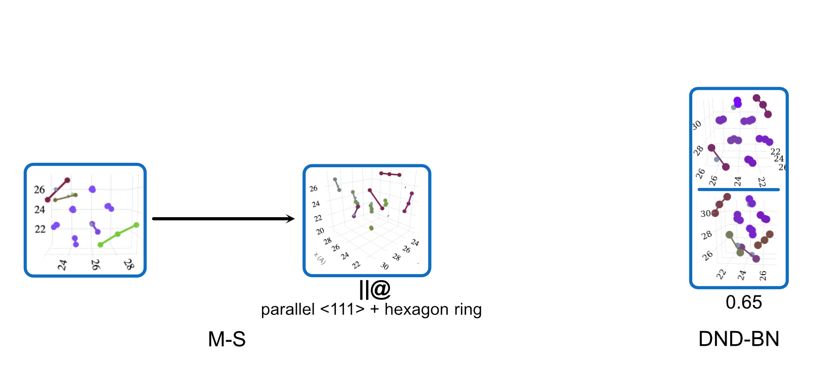
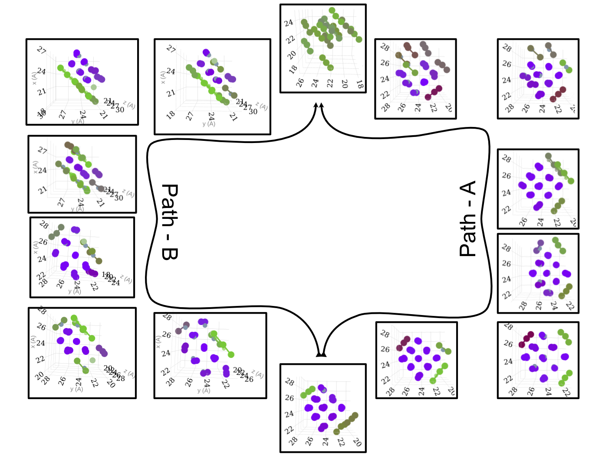

SIA Defect Morphologies in W
Collision Cascade simulations
Utkarsh Bhardwaja, Andrea E. Sandb and Manoj Warriera
| a Bhabha Atomic Research Centre, Vizag, India; | b Aalto University, Finland
*(Play audio from the player at the bottom)
A Collision Cascade
(interactive slide)Clusters
IN CASCADES
(interactive slide)Defect Morphology Matters
- Decides diffusion (sessile / glissile)
- Decides interaction with other defects
- Decides thermal stability
Higher scale models can use the distribution of different morphologies along with their properties as inputs.
In terms of the development of models to describe the evolution of radiation damage and its role in irradiation-induced changes in material properties, the important parameters are not only the total number of Frenkel defects per cascade but also the distribution of their population in clusters and the form and mobility of these clusters.D.J. Bacon, F. Gao, Y.N. Osetsky, J. Nucl. Mater., 276 (1–3) (2000), pp. 1-12 ---
Challenges
- Mixed morphologies complex configurations, intermediate configurations during annealing and interactions
- Morphological details such as Burgers vector and magnitude for dislocations
- Internal details such as length & orientation of crowdions/dumbbells in a cluster
- Efficiency Big databases, big simulation boxes
- Accuracy
Current methods
- Visual inspection becomes intractable and unreliable for bigger databases.
- Dislocation Analysis ineffective for non-dislocations & small defects, inefficient for big system size.
- Traditional geometrical methods such as CNA, CSP: label atoms as known crystals but lack morphology.
- Newer geometrical features unsupervised classification, statistical distance (distortion score) etc.
SaVi Algorithm Overview
Graph theory based approach to characterize self interstitial defect morphology, Computational Material Science, Elsevier, 2021
SaVi Applications
1 - Defect Morphologies in W
139 high energy collision cascades having 1170 clusters simulated with Derlet potential stiffened by Bjorkas.W Cluster Morphologies
Comparison with DXA
 SaVi Applications
2 - Potential Comaparison
- DND-BN: by Derlet et al. with repulsive part fitted by Bjo ̈rkas et al.
- JW: Finnis-Sinclair potential, modified by Juslin et al.
- M-S: EAM4 by Marinica et al., stiffened by Sand et al. (M-S_h)
Comparison of SIA Defect Morphologies from Different Interatomic Potentials for Collision Cascades in W, MSMSE, 2021
Potential Comparison - Morphology Distribution
Potential Comparison - Morphology Size Distribution
SaVi Applications
3 - Stability of Defects
MD set-up for Stability and Transitions
- Extract out the defect with some extra unit-cells.
- Place the defect in a crystal with sufficient size taking care of finite size effects.
- 16 different sample NPT runs for 100ns at different temperatures.
- Track the instance where morphological changes occur using SaVi.
- Using SaVi we output various parameters such as number of lines in particular orientations at each time-step to understand transition mechanism.
Oversimplified Outline
Details depend on Size, Internal Morphological Details & Potential Used  Stability of <100> dislocations
Dependence on Size, Configuration and Potential
Dependence on Size, Configuration and Potential

Dependence on Size, Configuration and Potential
Dependence on Size, Configuration and Potential
Transition Mechanism and Movement
Concluding Remarks
- SaVi automatically determines morphology and internal morphological details of SIA defects.
- Six different morphologies in W.
- The differences in defect morphology after collision cascades with different potentials is significant.
- The stability of the defects depends on their morphologies, size, internal configuration and choice of interatomic potential.
- Experiments to understand the differences in results with different potentials.
THE END
Download Csaransh and give it a try on your data (https://github.com/haptork/csaransh/)
Discuss the results, get back with suggestions and feedback at CSaransh github repository.